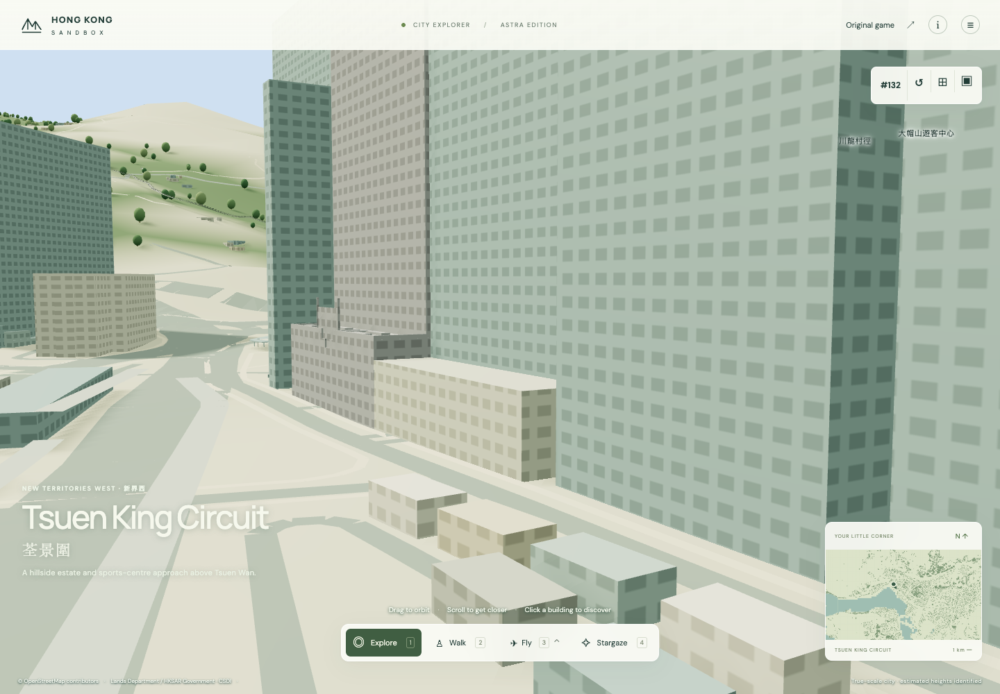
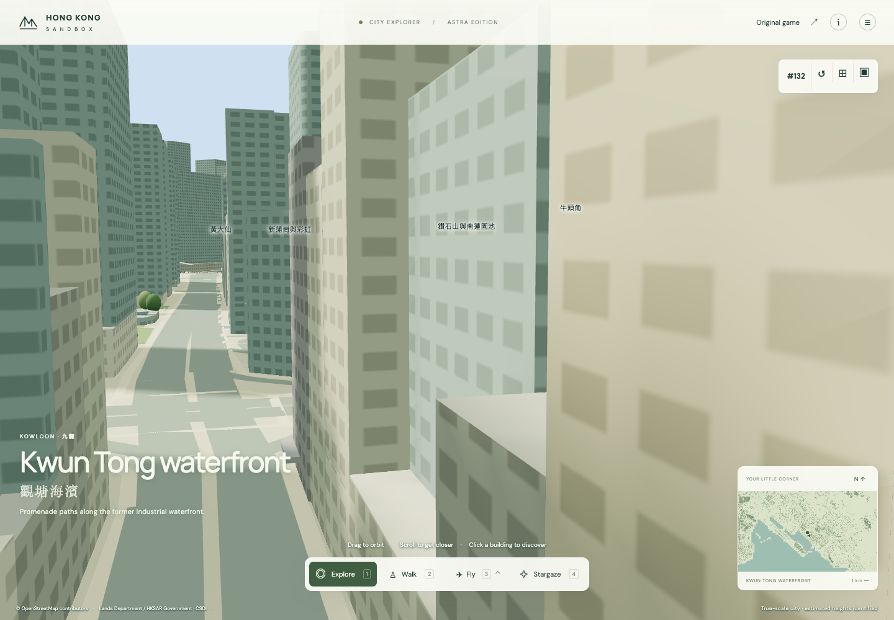
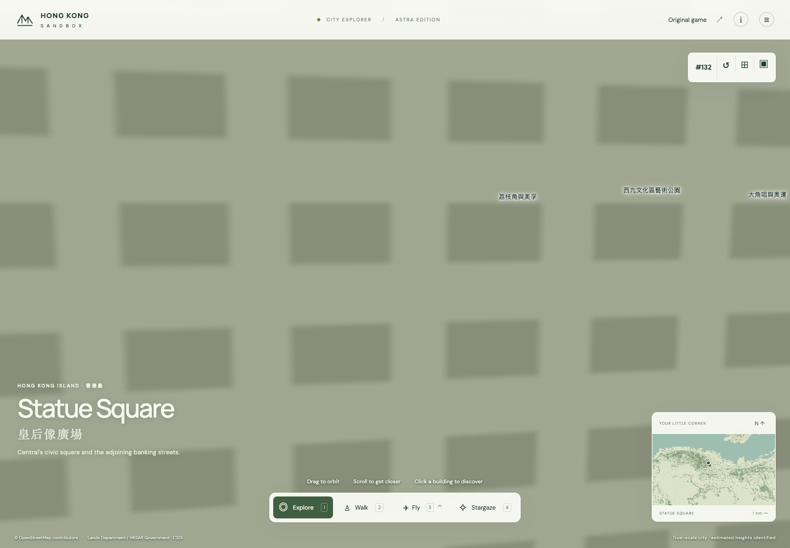
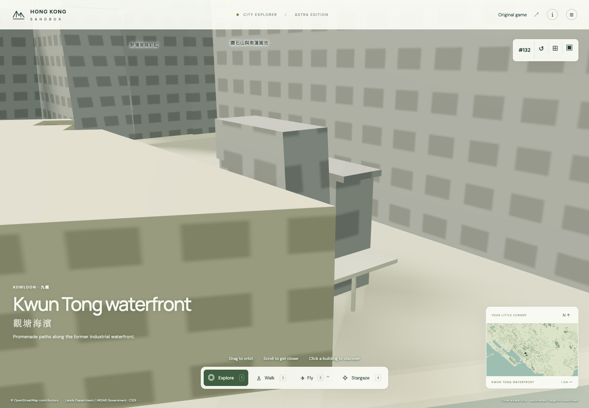
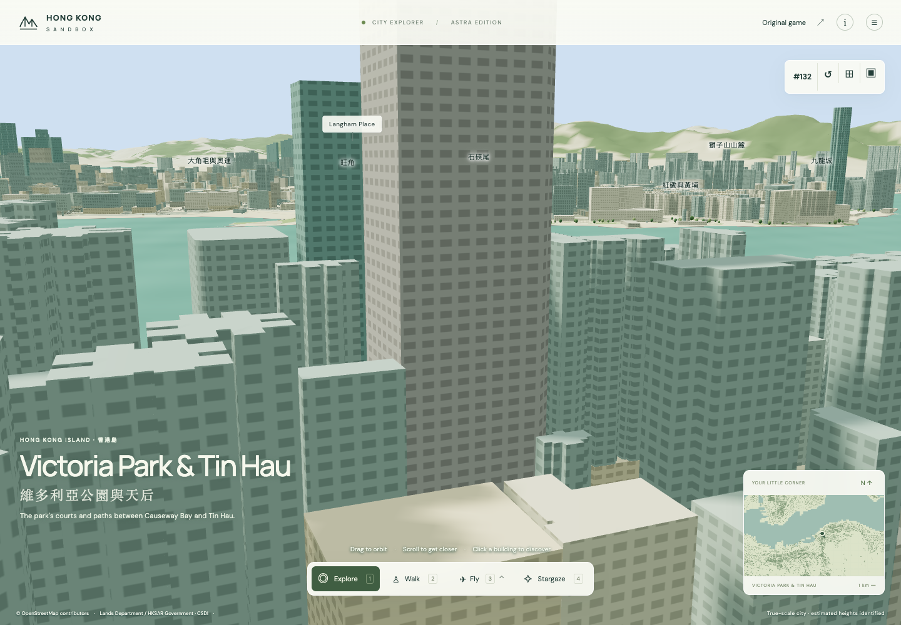
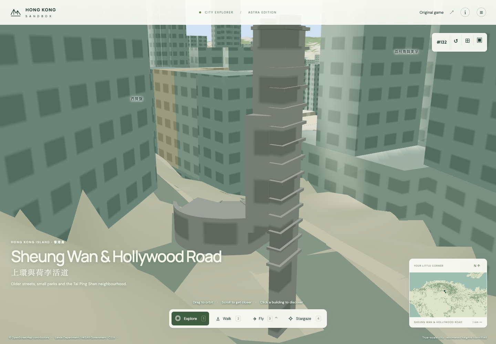

<!doctype html><meta charset="utf-8"><style>body{margin:15px;font:15px sans-serif;background:#eef1ed}main{display:grid;grid-template-columns:1fr 1fr;gap:10px}figure{margin:0;background:white}img{width:100%;height:345px;object-fit:contain}figcaption{padding:5px}</style><main><figure><figcaption>CABLE TV TOWER · landsd/335558:0 · landmark membership still proposed</figcaption></figure><figure><figcaption>The Grid · landsd/335943:0 · landmark membership still proposed</figcaption></figure><figure><figcaption>Pedder Building · landsd/69002:0</figcaption></figure><figure><figcaption>AXA TOWER · landsd/78268:0 · landmark membership still proposed</figcaption></figure><figure><figcaption>AIA Tower · landsd/85738:0</figcaption></figure><figure><figcaption>39 CONDUIT ROAD · landsd/95610:0</figcaption></figure></main>